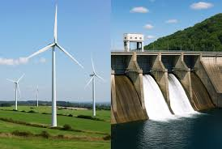
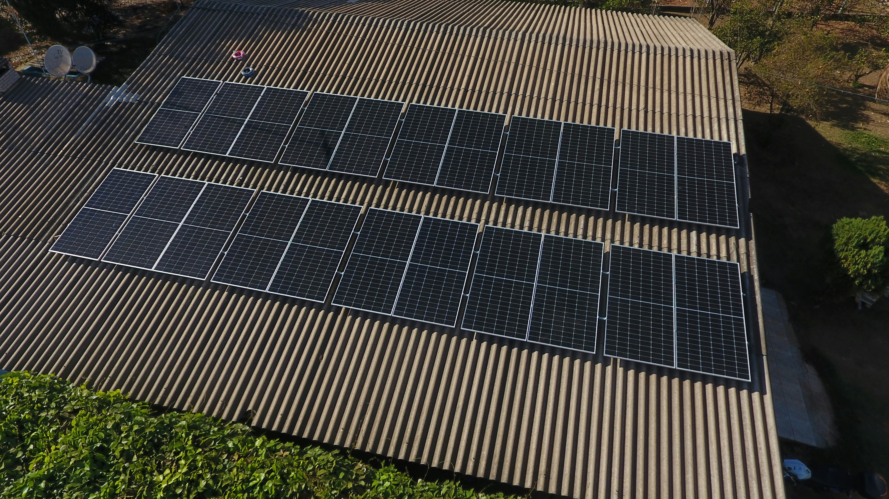
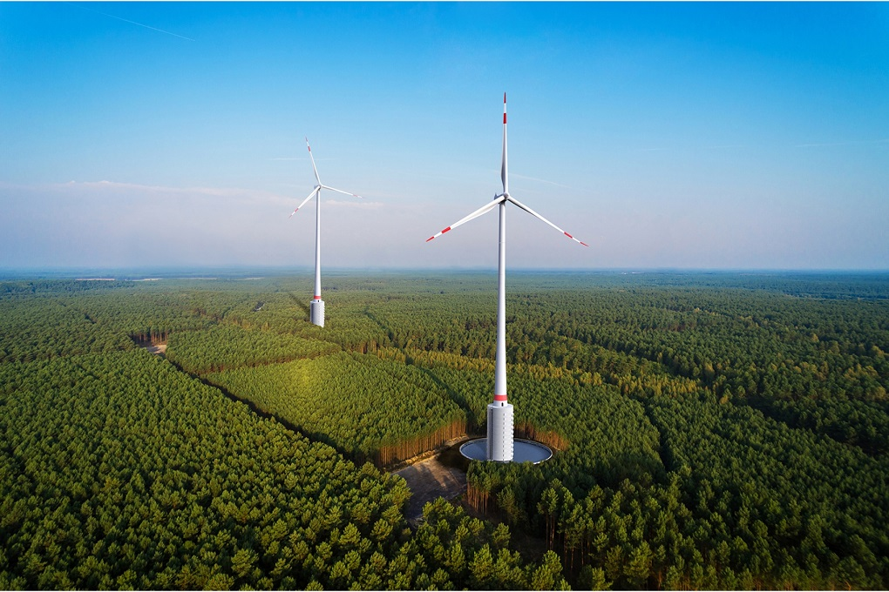
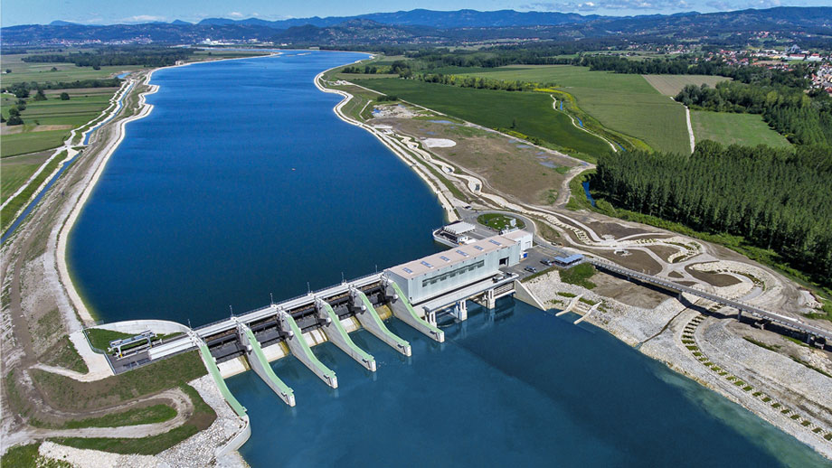
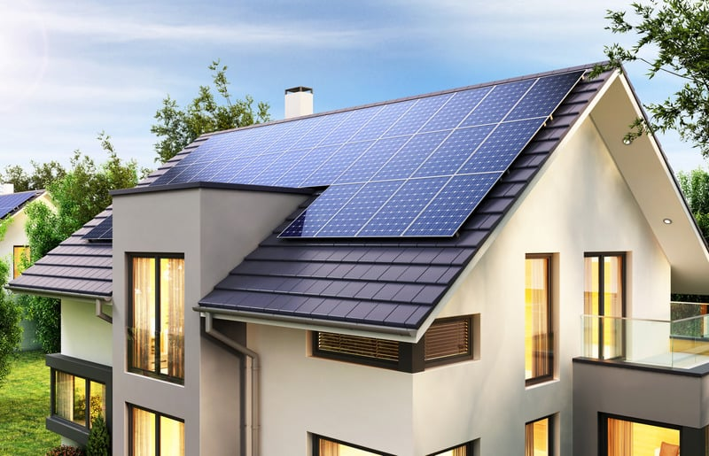
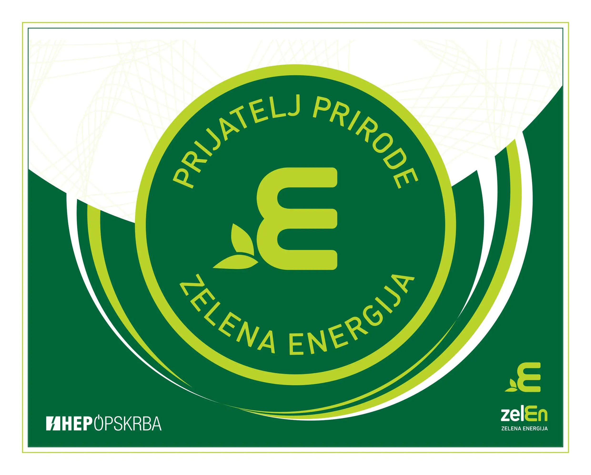

Tehnologije obnovljivih izvora energije
Kliknite na bilo koji dio slika ispod kako biste saznali detaljne informacije o svakoj vrsti obnovljive energije u Bosni i Hercegovini.
Vjetar i Voda

Solarna Energija

Cijene otkupa električne energije
Referentne cijene otkupa električne energije iz obnovljivih izvora energije za 2025/2026 godinu:
| Tehnologija | Instalirana snaga | Referentna cijena (KM/kWh) | Period podsticaja (god.) | Status aukcije |
|---|---|---|---|---|
| Solarna fotonaponska | do 500 kW | 0,1650 | 15 | Aktivna |
| Solarna fotonaponska | 500 kW – 10 MW | 0,1250 | 15 | Aktivna |
| Vjetroelektrana | do 5 MW | 0,0820 | 12 | U pripremi |
| Mala hidroelektrana | do 1 MW | 0,1100 | 15 | Aktivna |
| Biomasa | do 5 MW | 0,1380 | 12 | Zatvorena |
Galerija projekata





Kategorije i podkategorije OIE
- ☀️ Solarna energija
- Fotonaponski sistemi
- Sistemi na krovu (rooftop)
- Solarni parkovi (ground-mounted)
- Solarno termalni sistemi
- Prosumerska postrojenja
- Fotonaponski sistemi
- 💨 Vjetroenergija
- Onshore vjetroelektrane
- Male vjetroelektrane (do 100 kW)
- 💧 Hidroenergija
- Male hidroelektrane (do 10 MW)
- Mikro hidroelektrane (do 100 kW)
- 🌿 Biomasa i bioplin
- Drvna biomasa
- Bioplin iz otpada
- Biogas postrojenja